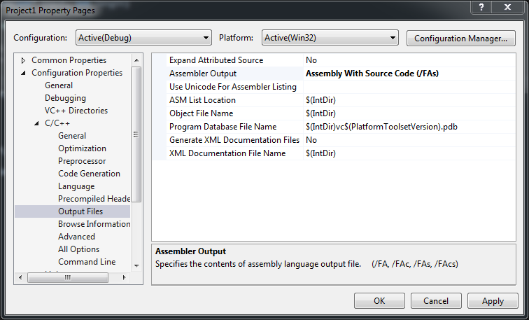
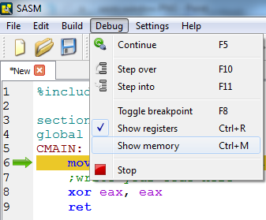
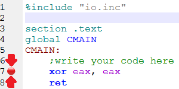
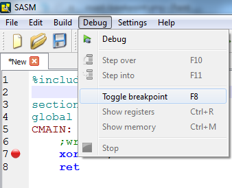

Laborator 02: Toolchain
În acest laborator, vom trece prin fiecare nivel de procesare a unui limbaj de nivel înalt și prin toolchain-ul pe care îl vom folosi de acum încolo.
C basics: GOTOs
Un concept mai puțin abordat în tutoriale de C este instrucțiunea goto. Prin instrucțiunea goto, un program poate sări în puncte intermediare în cadrul unei funcții. Aceste puncte intermediare se numesc label-uri (etichete).
Un exemplu de cod:
#include <stdio.h> int main() { int i, j, k; /* some code */ do_some_work: /* some other code */ work(); if (any_work()) goto do_some_work; /* some code */ return 0; }
Programul execută un job prin work(). În caz că mai sunt alte joburi neterminate, programul sare la labelul do_some_work.
do_some_work este punctul din program în care începe procesarea unui nou job. Acesta e marcat printr-un nume urmat de :.
Pentru a sări la acest punct din program se folosește instrucțiunea goto urmată de numele etichetei declarate.
Prin diferite combinații de if-uri si goto-uri se pot echivala alte instrucțiuni din C, cum ar fi else, for si while.
Codul dat exemplu mai sus ar putea fi un candidat care să înlocuiască o instrucțiune do { /* ... */ } while ();:
#include <stdio.h> int main() { int i, j, k; /* some code */ do { /* some other code */ work(); } while (any_work()); /* some code */ return 0; }
The "WHYs" of goto
Această instrucțiune nu doar că adesea lipsește din tutorialele de C, dar se fac recomandări împotriva abordării ei deoarece de cele mai multe ori duce la cod ofuscat (greu de înțeles, întreținut și depanat).
Există totuși mici cazuri în care este folosit. În codul kernel-ului de Linux, instrucțiunile de goto sunt folosite ca o formă de try-catch din limbaje de nivel mai înalt (precum C++, Java, C#, etc.).
Exemplu:
int process_data_from_mouse_device(...) { int err; int x, y; /* >>try<< instructions */ err = init_communication_with_mouse(); if (err) goto error; err = get_x_coord_from_mouse(&x); if (err) goto error; err = get_y_coord_from_mouse(&y); if (err) goto error; err = announce_upper_layers_of_mouse_movement(x, y); if (err) goto error; err = close_communication_with_mouse(); if (err) goto error; return 0; /* >>catch<< instructions' exceptions */ error: print_message("Failed to get data from mouse device. Error = %d", err); return err; }
Acest cod încearcă să proceseze datele venite de la un mouse și sa le paseze altor părți superioare din kernel care le-ar putea folosi. În caz că apare vreo eroare, se afișează un mesaj de eroare și se termină procesarea datelor.
Codul pare corect, dar nu este complet. Nu este complet pentru că în caz că apare o eroare în mijlocul funcției, comunicația cu mouse-ul este lăsată deschisă.
O variantă îmbunătățită ar fi următoarea:
int process_data_from_mouse_device(...) { int err; int x, y; /* >>try<< instructions */ err = init_communication_with_mouse(); if (err) goto error; err = get_x_coord_from_mouse(&x); if (err) goto error_close_connection; err = get_y_coord_from_mouse(&y); if (err) goto error_close_connection; err = announce_upper_layers_of_mouse_movement(x, y); if (err) goto error_close_connection; err = close_communication_with_mouse(); if (err) goto error; return 0; /* >>catch<< instructions' exceptions */ error_close_connection: close_communication_with_mouse(); error: print_message("Failed to get data from mouse device. Error = %d", err); return err; }
În varianta îmbunătățită, dacă apare o eroare, se face și o parte de curățenie: conexiunea cu mouse-ul va fi închisă, și apoi codul va continua cu tratarea generală a oricărei erori din program (afișarea unui mesaj de eroare).
Când vom ajunge în limbajul de asamblare se va putea observa ca o bună parte din instrucțiunile unui limbaj de nivel înalt, chiar și precum C, sunt inexistente, iar o bună parte din workflow seamănă cu un program format din goto-uri.

De la C la program în rulare
Un compilator trece prin următoarele etape:
- preprocesare
- compilare
- asamblare
- link editare
În etapa de compilare codul este tradus din cod de nivel înalt în limbaj de asamblare. Limbajul de asamblare este o formă human-readable a ce ajunge procesorul să execute efectiv. Dacă programele scrise în limbaje de nivel înalt ajung să fie portate ușor pentru procesoare diferite (arm, powerpc, x86, etc.), cele scrise în limbaj de asamblare sunt implementări specifice unei anumite arhitecturi. Limbaje de nivel înalt reprezintă o formă mai abstractă de rezolvare a unei probleme, din punctul de vedere al unui procesor, motiv pentru care și acestea trebuie traduse în limbaj de asamblare în cele din urmă, pentru a se putea ajunge la un binar care poate fi rulat. Mai multe detalii în laboratorul următor.
În imaginea de mai jos sunt reprezentate etape prin care trece un program din momentul în care este scris până când este rulat ca un proces. Putem observa între acestea etapele descrise mai sus: preprocesare, compilare, asamblare, link-editare.

Majoritatea compilatoarelor oferă opțiunea de a genera și un fișier cu programul scris în limbaj de asamblare.
În arhiva de aici aveți un exemplu de trecere a unui program foarte simplu hello.c prin cele patru faze. Îl puteți testa pe un sistem Unix/Linux și pe un sistem Windows cu suport de MinGW. Pe sistemele din laborator și în mașina virtuală (disponibilă aici) există suport MinGW și îl veți putea testa folosind comanda make la fel ca mai jos și apoi diversele fișiere:
$ make
cc -E -o hello.i hello.c
cc -Wall -S -o hello.s hello.i
cc -c -o hello.o hello.s
cc -o hello hello.o
$ ls
Makefile hello hello.c hello.i hello.o hello.s
$ ./hello
Hello, World!
$ tail -10 hello.i
# 5 "hello.c"
int main(void)
{
puts("Hello, World!");
return 0;
}
$ cat hello.s
.file "hello.c"
.section .rodata
.LC0:
.string "Hello, World!"
.text
.globl main
.type main, @function
main:
.LFB0:
.cfi_startproc
pushq %rbp
.cfi_def_cfa_offset 16
.cfi_offset 6, -16
movq %rsp, %rbp
.cfi_def_cfa_register 6
movl $.LC0, %edi
call puts
movl $0, %eax
popq %rbp
.cfi_def_cfa 7, 8
ret
.cfi_endproc
.LFE0:
.size main, .-main
.ident "GCC: (Debian 5.2.1-17) 5.2.1 20150911"
.section .note.GNU-stack,"",@progbits
$ file hello.o
hello.o: ELF 64-bit LSB relocatable, x86-64, [...]
$ file hello
hello: ELF 64-bit LSB executable, x86-64, [...]
$ objdump -d hello.o
hello.o: file format elf64-x86-64
Disassembly of section .text:
0000000000000000 <main>:
0: 55 push %rbp
1: 48 89 e5 mov %rsp,%rbp
4: bf 00 00 00 00 mov $0x0,%edi
9: e8 00 00 00 00 callq e <main+0xe>
e: b8 00 00 00 00 mov $0x0,%eax
13: 5d pop %rbp
14: c3 retq
Toolchain
În cadrul laboratorului vom folosi asamblorul NASM. Acesta este foarte folosit în tutoriale și cărți legate de scrierea programelor în limbaje de asamblare.
Ca IDE vom folosi SASM. Pe Windows dispune de un installer de tipul next-next-next. Vine cu tool-urile aferente(inclusiv NASM) și este preconfigurat corespunzător.
Ambele programe menționate sunt open-source și valabile pe toate platformele cunoscute (Windows, Linux și MacOS).
Exerciții:
[2p] 1. Online C Compiling
Un tool interesant pentru a observa cum se traduce codul C în limbaj de asamblare este Compiler Explorer.
- Intrați pe Compiler Explorer.
- Încărcați programul “sum over array” din exemple (accesibile folosind butonul de load, în formă de dischetă).
- Asigurați-vă că x86 gcc 4.8.2 este selectat la Compiler:.
- Selectați Intel syntax. Acesta este un format mai ușor de digerat și mai asemănător formatului acceptat de NASM.
- Folosiți opțiunea
-m32(laCompiler options) pentru a afișa cod în limbaj de asamblare pe 32 de biți (față de 64 de biți în mod implicit). - Pentru a putea să vă dați seama ce cod C s-a tradus într-un anumit set de instrucțiuni de asamblare selectați Colourise.
- În continuare codul este destul de greoi. Pentru a putea fi mai human-readable adăugați opțiunea -O2 la opțiunile de compilare (
Compiler options). - Se poate observa existența simbolurilor .L3: și .L4:. Acestea reprezintă puncte fixe în program, label-uri, destul de asemănătoare cu ceea ce se găsește și în C.
- Treceți, pe rând, prin compilatoarele corespunzătoare următoarelor arhitecturi: ARM, ARM64, AVR, PowerPC. Atenție: pentru ARM, ARM64 și AVR va trebuie să renunțați la flag-ul
-m32setat anterior. Se poate observa cum codul generat diferă de la o arhitectură la alta. - Mai încercați și următoarele compilatoare: clang și icc. După cum se poate observa, deși este același cod C și aceeași arhitectură, codul generat diferă. Acest lucru se întâmplă pentru că fiecare compilator poate avea o strategie de optimizare și generare de cod diferită.
Scrieți în zona Code editor următoarea secvență de cod:
int simple_fn(void)
{
int a = 1;
a++;
return a;
}
Observați codul în limbaj de asamblare atunci când opțiunile de compilare (Compiler options) sunt -m32, respectiv atunci când opțiunile de compilare sunt -m32 -O2. Observați ce efect au opțiunile de optimizare asupra codului în limbaj de asamblare generat.
[2p] 2. Microsoft Visual Studio: from C to assembly
La exercițiul anterior am abordat compilatoarele gcc, clang și icc pentru a observa cam ce cod de asamblare produc. În acest exercițiu vom trece în revistă și compilatorul celor de la Microsoft (valabil pe Microsoft Windows, evident).
În primă fază deschideți Microsoft Visual Studio și creați un nou proiect gol.
File → New project, apoi selectați Win32 Console Application, apoi Next și apoi selectați Empty Project.
Project Properties
-> Configuration Properties
-> Linker (General)
-> Enable Incremental Linking -> "No (/INCREMENTAL:NO)"
#include <stdlib.h>
...
system("pause");
...
Plasați apelul system("pause"); la sfârșitul funcției main().
Pentru a adăuga un fișier nou în cadrul proiectului mergeți cu mouse-ul în zona Solution Explorer (din partea dreapta sus a ecranului) și apoi folosiți click dreapta pe intrarea Source files, apoi folosiți Add și apoi, după caz, New Item sau Existing Item. Adăugați un fișier nou în cadrul proiectului, numit main.cpp și adăugați următorul cod în fișier:
#define DATA_LEN 100 int testFunction(int* input, int length) { int sum = 0; for (int i = 0; i < length; ++i) { sum += input[i]; } return sum; } int main() { int random_data[DATA_LEN]; testFunction(random_data, DATA_LEN); return 0; }
Mergeți în proprietățile proiectului (Project → <project_name> Properties..), la secțiunea indicată în următoarea imagine:

Asigurați-vă că la câmpul Assembler Output este selectat Assembly With Source Code (/FAs) și dați OK pentru ca proprietățile să ia efect.
Folosiți Debug → Build Solution pentru a compila proiectul. În acest moment vi s-a generat un fișier *.asm, dar care nu va apărea în Visual Studio.
Pentru a vizualiza fișierul în cauză, accesati directorul aferent proiectului (în mod implicit este în C:\Users\student\Documents\Visual Studio 2010\Projects\...). Într-unu subdirector numit Debug veți găsi un fișier cu extensia .asm; deschideți acest fișier. După cum puteți observa, acesta conține codul de asamblare intercalat cu comentarii în care este prezentat codul original.
Debug: unul aferent soluției și altul aferent proiectului. Alegeți directorul Debug aferent proiectului.
[1p] 3. SASM: walkthrough
3.1 Proiect nou
Pentru a crea un proiect nou intrați la File → New.
3.2 Ferestre

Legendă:
- editorul
- fereastră în care se pot transmite date programului
- fereastră în care se afișează outputul programului
- logging pentru build, clean, run
3.3 Butoane
 Step into - dacă instrucțiunea curentă apelează o funcție, se va arăta și execuția din interiorul ei
Step into - dacă instrucțiunea curentă apelează o funcție, se va arăta și execuția din interiorul ei Continue - continuă execuția până la următorul breakpoint sau până se termină programul
Continue - continuă execuția până la următorul breakpoint sau până se termină programul


{kind=link}
{kind=link}
{kind=link}
{kind=link}
{kind=link}
{kind=link}
3.4 Modul debugging
În modul debugging (programul rulat cu ), vă mai apare o ferestră cu resursele procesorului (starea registrelor sale):

Opțional, puteți activa și o fereastră prin care puteți monitoriza valorile unor variabile în timpul sesiunii de depanare:

Activarea acestei ferestre se face din meniu astfel:

{kind=link}
Pentru a introduce un breakpoint dați click în dreapta linenumber-ului corespunzător liniei pe care vreți să o depanați. Când va fi setat un breakpoint pentru o linie, în stanga ei va apărea și un cerculeț roșu care să desemneze acest lucru: 
{kind=link}
O alternativă ar fi, având cursorul pe linia în cauză, să apăsați tasta F8 sau să dați comanda din meniu:

{kind=link}
[1p] 4. C: Warm-up GOTOs
Pentru exercițiul acesta va trebui să descarcați arhiva de laborator și să navigați în directorul aferent task-ului curent.
Pentru compilarea/rularea codului puteți folosi IDE-urile Code::Blocks sau Visual Studio sau puteți folosi linia de comandă ca mai jos.
Pentru a compila un fișier cod sursă C/C++ în linia de comandă folosind Visual Studio, urmați pașii:
- Deschideți butonul de start, selectați
All apps, apoi mergeți la literaV, selectați directorulVisual Studio 2015și alegeți opțiuneaVisual Studio x86 Native Command Prompt. - Accesați directorul în care aveți codul sursă. Echivalentul din windows pentru
lsestedir. Dacă ați folosit calea default proiectul ar trebui să se găsească în (modificaținume_proiectcu numele proiectului pe care l-ați creat)C:\Users\student\Documents\Visual Studio 2010\Projects\nume_proiect\nume_proiect
- Folosiți comanda
cl <nume-fisier>.cpp
unde
<nume-fisier>este numele fișierului. - Rulați executabilul obținut folosind comanda
.\nume-fisier
unde
<nume-fisier>este numele fișierului.
[0.5p] Modificați codul sursă din fișierul bogosort.c (Bogosort) prin înlocuirea
instrucțiunii break cu o instrucțiune goto astfel încât funcționalitatea să se păstreze.
- Nu indentați etichetele (label-urile). “Lipiți-le” de marginea din stânga a ecranului de editare.
- O etichetă este singură pe liniei. Nu există cod după etichetă.
- Nu țineți cont de etichete în indetarea codului. Codul trebuie indendat în același mod și cu etichete și fără etichete.
- Puneți o linie liberă înaintea linie care conține o etichetă.
[0.5p] În mod asemănător modificați instrucțiunea continue din ignore_the_comments.c astfel încât funcționalitatea codului să se păstreze.
goto poate fi util
[4p] 5. C: GOTOs
Pentru algoritmii de mai jos scrieți cod în C fără a folosi:
- apeluri de funcţii (exceptând scanf() şi printf())
- else
- for
- while
- do {} while;
- construcțiile
ifcare conțin return - if-uri imbricate
If-urile trebuie sa contina cel mult un goto.
Adică va trebui să folosiți if și multe instrucțiuni goto.
[2p] Implementați maximul dintr-un vector folosind cod C și constrângerile de mai sus.
[2p] Implementați căutare binară folosind cod C și constrângerile de mai sus.
goto sunt limitate. Exercițiile acestea au valoare didactică pentru a vă acomoda cu instrucțiuni de salt (jump) pe care le vom folosi în dezvoltarea în limbaj de asamblare.
[2p] 6. Bonus
Implementați cu aceleași constrângeri ca la exercițiul anterior și algoritmii:
- [1p] Bubble sort. Porniți de la implementarea fără
goto-uri. - [1p] Căutarea unui substring într-un string. În mod asemănător, puteți porni de la implementarea fără
goto-uri.